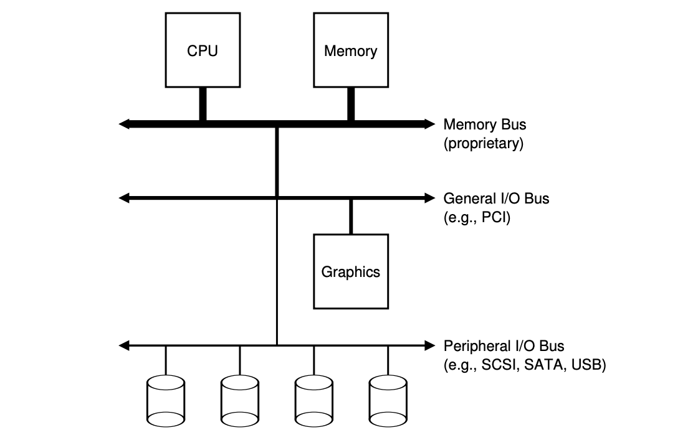
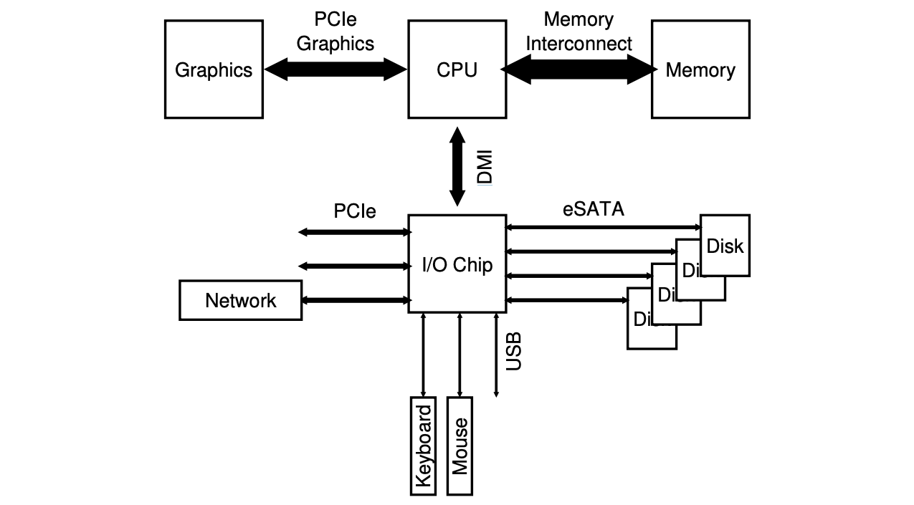
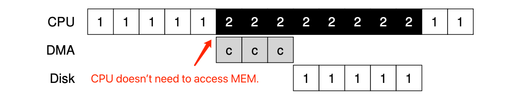
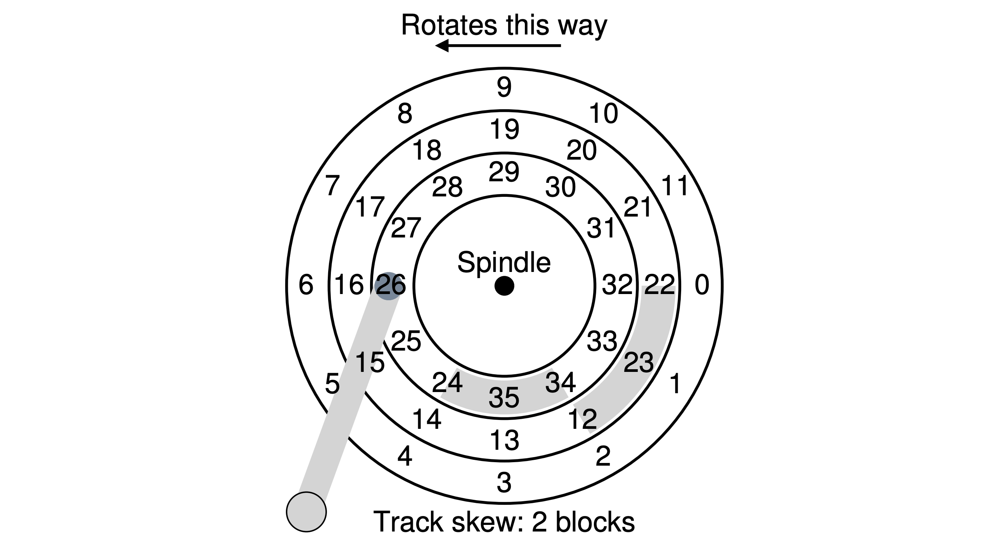
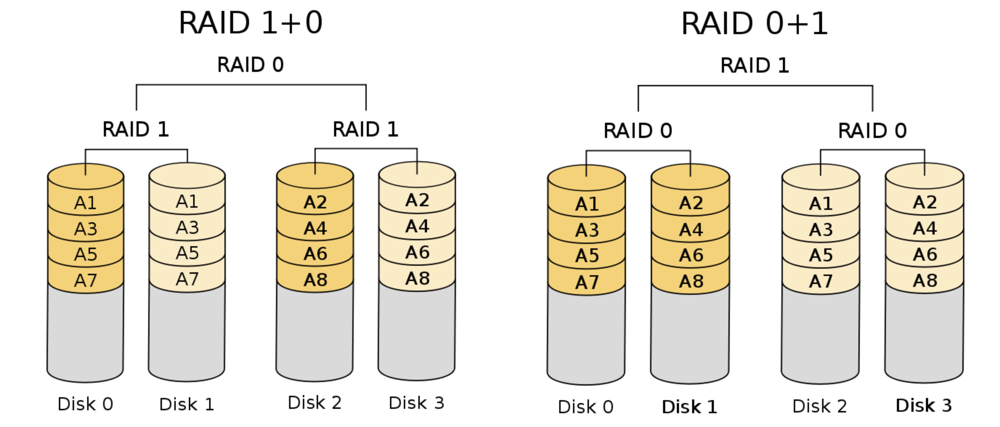
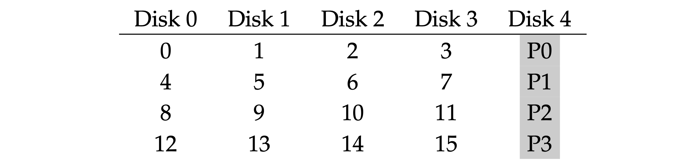
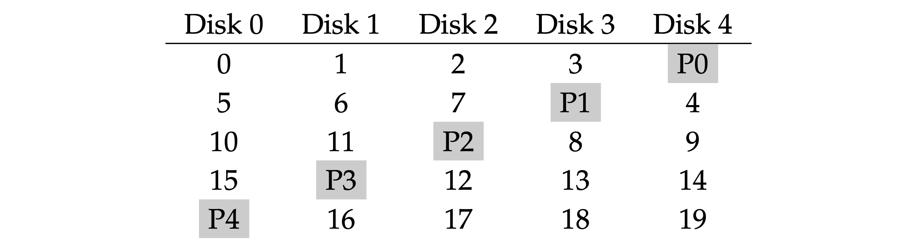

《Operating Systems: Three Easy Pieces》读书笔记（第 30-38 章）
书接上回，本文是第 30-38 章的笔记。内容基于自身情况记录，仅供参考，Dialogue 的相关章节已略过。
Chapter 30: Condition Variables
- Condition variable: is an explicit queue that threads can put themselves on when some state of execution (i.e., some condition) is not as desired (by waiting on the condition); some other thread, when it changes said state, can then wake one (or more) of those waiting threads and thus allow them to continue (by signaling on the condition).
// Basic usage:
int done = 0; // The state variable.
pthread_mutex_t m = PTHREAD_MUTEX_INITIALIZER;
pthread_cond_t c = PTHREAD_COND_INITIALIZER;
void thr_exit() {
Pthread_mutex_lock(&m);
done = 1;
Pthread_cond_signal(&c); // Tip: hold the lock when calling signal.
Pthread_mutex_unlock(&m);
}
void *child(void *arg) {
printf("child\n");
thr_exit();
return NULL;
}
void thr_join() {
// The mutex should be locked when 'pthread_cond_wait' is being called.
Pthread_mutex_lock(&m);
while (done == 0)
// Release the lock and put the calling thread to sleep, when the thread wakes up, -
// it must re-acquire the lock before returning to the caller.
Pthread_cond_wait(&c, &m);
Pthread_mutex_unlock(&m);
}
int main(int argc, char *argv[]) {
printf("parent: begin\n");
pthread_t p;
Pthread_create(&p, NULL, child, NULL);
thr_join();
printf("parent: end\n");
return 0;
}
- The producer/consumer (bounded-buffer) problem:
int buffer[MAX]; // More buffer slots.
int fill_ptr = 0;
int use_ptr = 0;
int count = 0;
void put(int value) {
buffer[fill_ptr] = value;
fill_ptr = (fill_ptr + 1) % MAX;
count++;
}
int get() {
int tmp = buffer[use_ptr];
use_ptr = (use_ptr + 1) % MAX;
count--;
return tmp;
}
cond_t empty, fill; // Use separate conditions for producer and consumer.
mutex_t mutex;
void *producer(void *arg) {
int i;
for (i = 0; i < loops; i++) {
Pthread_mutex_lock(&mutex);
// use "while" here to avoid spurious wakeups as well as some corner conditions.
while (count == MAX)
Pthread_cond_wait(&empty, &mutex);
put(i);
Pthread_cond_signal(&fill);
Pthread_mutex_unlock(&mutex);
}
}
void *consumer(void *arg) {
int i;
for (i = 0; i < loops; i++) {
Pthread_mutex_lock(&mutex);
while (count == 0)
Pthread_cond_wait(&fill, &mutex);
int tmp = get();
Pthread_cond_signal(&empty);
Pthread_mutex_unlock(&mutex);
printf("%d\n", tmp);
}
}
- Mesa semantics: after the producer woke one consumer, but before this consumer ever ran, the state of the bounded buffer could be changed by other consumers. Signaling a thread only wakes them up; but there is no guarantee that when the woken thread runs, the state will still be as desired. The contrast, referred to as “Hoare semantics“, which provides a stronger guarantee that the woken thread will run immediately upon being woken.
- The wake operation on a condition variable is non-deterministic, meaning not sure which threads would be woken, and it would cause a problem, if a consumer wakes another consumer where it should have woken the producer originally. The consumer and producer should use different separate condition variables.
When checking for a condition in a multi-threaded program, using a
whileloop is always correct, using anifstatement only might be, depending on the semantics of signaling. Using while loops around conditional checks also handles the case where spurious wakeups occur.Covering condition: the condition that covers all the cases where a thread needs to wake up (conservatively), the cost is that too many threads might be woken.
// How many bytes of the heap are free?
int bytesLeft = MAX_HEAP_SIZE;
cond_t c;
mutex_t m;
void *allocate(int size) {
Pthread_mutex_lock(&m);
while (bytesLeft < size)
Pthread_cond_wait(&c, &m);
void *ptr = ...; // Get mem from heap.
bytesLeft -= size;
Pthread_mutex_unlock(&m);
return ptr;
}
void free(void *ptr, int size) {
Pthread_mutex_lock(&m);
bytesLeft += size;
// Wake up all the waiting threads, then each one to check whether they can proceed.
pthread_cond_broadcast(&c);
Pthread_mutex_unlock(&m);
}
Chapter 31: Semaphores
- Semaphores:
- The value of the semaphore, when negative, is equal to the number of waiting threads.
- API interfaces:
- int sem_wait(sem_t *s):
- Decrement the value of semaphore s by one.
- Wait if value of semaphore s is negative.
- int sem_post(sem_t *s):
- Increment the value of semaphore s by one.
- If there are one or more threads waiting, wake one.
- int sem_wait(sem_t *s):
- Use semaphore as a lock (aka. binary semaphore):
#include <semaphore.h>
sem_t s;
sem_init(&s, 0, 0);
// Initialize the semaphore to 0 (3rd parameter), -
// and shared between threads in the same process (by the 2nd parameter 0).
sem_wait(&m);
// Critical section ...
sem_post(&m);
- Use semaphore for ordering:
sem_t s;
void *child(void *arg) {
printf("child\n");
sem_post(&s); // Signal here: child is done.
return NULL;
}
int main(int argc, char *argv[]) {
sem_init(&s, 0, 0);
printf("parent: begin\n");
pthread_t c;
Pthread_create(&c, NULL, child, NULL);
sem_wait(&s); // Wait here for child.
printf("parent: end\n");
return 0;
}
- Use semaphore for resolving producer/consumer (bounded-buffer) problem:
int buffer[MAX];
int fill = 0;
int use = 0;
void put(int value) {
buffer[fill] = value;
fill = (fill + 1) % MAX;
}
int get() {
int tmp = buffer[use];
use = (use + 1) % MAX;
return tmp;
}
sem_t empty, full, mutex;
void *producer(void *arg) {
int i;
for (i = 0; i < loops; i++) {
sem_wait(&empty); // Decrement $empty by one, wait if it's negative.
sem_wait(&mutex); // The mutual exclusion for the critical section under "put" and "get".
put(i);
sem_post(&mutex);
sem_post(&full); // Increment $full by one, then wake one thread.
}
}
void *consumer(void *arg) {
int i;
for (i = 0; i < loops; i++) {
sem_wait(&full);
sem_wait(&mutex);
int tmp = get();
sem_post(&mutex);
sem_post(&empty);
printf("%d\n", tmp);
}
}
int main(int argc, char *argv[]) {
// ...
sem_init(&empty, 0, MAX); // MAX are empty.
sem_init(&full, 0, 0); // 0 are full.
sem_init(&mutex, 0, 0);
// ...
}
- Reader-writer locks: an RW lock allows concurrent access for read-only operations, whereas write operations require exclusive access. This means that multiple threads can read the data in parallel but an exclusive lock is needed for writing or modifying data.
typedef struct _rwlock_t {
sem_t lock; // Binary semaphore (basic lock), allow ONE writer/MANY readers
sem_t writelock;
int readers; // #readers in critical section.
} rwlock_t;
void rwlock_init(rwlock_t *rw) {
rw->readers = 0;
sem_init(&rw->lock, 0, 1);
sem_init(&rw->writelock, 0, 1);
}
void rwlock_acquire_readlock(rwlock_t *rw) {
sem_wait(&rw->lock);
rw->readers++;
if (rw->readers == 1) // First reader gets writelock, which may starve the writer.
sem_wait(&rw->writelock);
sem_post(&rw->lock);
}
void rwlock_release_readlock(rwlock_t *rw) {
sem_wait(&rw->lock);
rw->readers--;
if (rw->readers == 0) // Last reader lets it go.
sem_post(&rw->writelock);
sem_post(&rw->lock);
}
void rwlock_acquire_writelock(rwlock_t *rw) {
sem_wait(&rw->writelock);
}
void rwlock_release_writelock(rwlock_t *rw) {
sem_post(&rw->writelock);
}
- Dining philosopher’s problem: assume there are five “philosophers” sitting around a table. Between each pair of philosophers is a single fork (and thus, five total). The philosophers each have times where they think, and don’t need any forks, and times where they eat. In order to eat, a philosopher needs two forks, both the one on their left and the one on their right. The contention for these forks, and the synchronization problems that ensue, are what makes this a problem we study in concurrent programming.
- Thread throttling: “how can a programmer prevent “too many” threads from doing something at once and bogging the system down?“ This could be simply done by setting the initial value of a semaphore.
- Semaphore implementation: implement semaphore with basic low-level synchronization primitives.
typedef struct __Zem_t {
int value;
pthread_cond_t cond;
pthread_mutex_t lock;
} Zem_t;
// Only one thread can call this.
void Zem_init(Zem_t *s, int value) {
s->value = value;
Cond_init(&s->cond);
Mutex_init(&s->lock);
}
void Zem_wait(Zem_t *s) {
Mutex_lock(&s->lock);
while (s->value <= 0)
Cond_wait(&s->cond, &s->lock);
s->value--;
Mutex_unlock(&s->lock);
}
void Zem_post(Zem_t *s) {
Mutex_lock(&s->lock);
s->value++;
Cond_signal(&s->cond);
Mutex_unlock(&s->lock);
}
Chapter 32: Common Concurrency Problems
- Atomicity-violation bugs: the desired serializability among multiple memory accesses is violated (i.e. a code region is intended to be atomic, but the atomicity is not enforced during execution). This type of bugs could be solved with a mutex.
// Thread 1::
if (thd->proc_info) {
fputs(thd->proc_info, ...);
}
// Thread 2::
thd->proc_info = NULL;
- Order-violation bugs: the desired order between two (groups of) memory accesses is flipped (i.e., A should always be executed before B, but the order is not enforced during execution)”. This type of bugs could be solved with a condition variable or semaphore.
// Thread 1::
void init() {
mThread = PR_CreateThread(mMain, ...);
}
// Thread 2::
void mMain(...) {
mState = mThread->State;
}
- Four conditions need to hold for a deadlock to occur:
- Mutual exclusion: threads claim exclusive control of resources that they require (e.g., a thread grabs a lock).
- Hold-and-wait: threads hold resources allocated to them (e.g., locks that they have already acquired) while waiting for additional resources (e.g., locks that they wish to acquire).
- No preemption: resources (e.g., locks) cannot be forcibly removed from threads that are holding them.
- Circular wait: there exists a circular chain of threads such that each thread holds one or more resources (e.g., locks) that are being requested by the next thread in the chain.
- Deadlock prevention:
- Provide a total / partial ordering: always acquiring locks in a fixed order to prevent cyclical wait. We can use the address of each lock as a way of ordering lock acquisition, namely by acquiring locks in either high-to-low or low-to-high address order.
- Acquiring all locks at once, atomically.
- Build a deadlock-free, ordering-robust lock acquisition protocol:
top:
pthread_mutex_lock(L1);
if (pthread_mutex_trylock(L2) != 0) {
pthread_mutex_unlock(L1);
goto top;
}
- Avoid mutual exclusion, by using powerful hardware instructions, we can build data structures in a manner that does not require explicit locking.
void insert(int value) {
node_t *n = malloc(sizeof(node_t));
assert(n != NULL);
n->value = value;
do { // Keep trying to update the value.
n->next = head;
// Will fail if some other thread successfully swapped in a new head in the meanwhile, -
// causing this thread to retry.
} while (CompareAndSwap(&head, n->next, n) == 0);
}
- Avoid deadlock via scheduling, which is not a widely-used general-purpose solution.
- Allow deadlocks to occasionally occur, and then take some action once such a deadlock has been detected (.e.g reboot).
Chapter 33: Event-based Concurrency (Advanced)
- Event-based concurrency: wait something to occur, when it does, we check what type of event it is and do the small amount of work it requires (which may include issuing I/O requests, or scheduling other events for future handling, etc.).
#include <stdio.h>
#include <stdlib.h>
#include <sys/time.h>
#include <sys/types.h>
#include <unistd.h>
int main(void) {
int minFD = 0;
int maxFD = 1;
// Open and set up a bunch of sockets (not shown) main loop.
while (1) { // The main event loop.
// Initialize the fd_set to all zero.
fd_set readFDs;
FD_ZERO(&readFDs);
// Now set the bits for the descriptors this server is interested in -
// (for simplicity, all of them from min to max).
for (int fd = minFD; fd < maxFD; fd++)
FD_SET(fd, &readFDs);
// Do the select, examines the I/O descriptor and find the ones are ready.
int rc = select(maxFD + 1, &readFDs, NULL, NULL, NULL);
// Check which actually have data using FD_ISSET().
for (int fd = minFD; fd < maxFD; fd++)
if (FD_ISSET(fd, &readFDs))
printf("Ready fd: %d\n", fd);
}
}
- Problems:
- Blocking system call: this could be solved with the asynchronous I/O request, and interrupt-based signal (polling is also available) to inform the thread of the finish of the request.
- State management: when an event handler issues an asynchronous I/O, it must package up some program state for the next event handler to use when the I/O finally completes. This could be solved with continuation: record the needed information to finish processing this event in some data structure; when the event happens (i.e., when the disk I/O completes), look up the needed information and process the event.
Chapter 36: I/O Devices
- A typical system architecture: the faster a bus is, the shorter it must be. So, the components that demand high performance (such as the graphics card) are nearer the CPU, lower performance components are further away.

- A modern system architecture:
Intel’s Z270 Chipset
- Interrupts on waiting I/O:
- If a device is fast, it may be best to poll.
- If it is slow, interrupts, which allow overlap, are best.
- If the speed of the device is not known, or sometimes fast and sometimes slow, it may be best to use a hybrid that polls for a little while and then, if the device is not yet finished, uses interrupts, this two-phased approach may achieve the best of both worlds.
- One interrupt-based optimization is coalescing, in which the OS won’t respond to the incoming interrupts immediately, but rather wait for a while to merge the potential upcoming interrupts into one.
- When a huge stream of incoming packets each generate an interrupt, it is possible for the OS to livelock, that is, find itself only processing interrupts and never allowing a user-level process to run and actually service the requests.
- DMA (Direct Memory Access): the OS would program the DMA engine by telling it where the data lives in memory, how much data to copy, and which device to send it to. At that point, the OS is done with the transfer and can proceed with other work. When the DMA is complete, the DMA controller raises an interrupt, and the OS thus knows the transfer is complete.

- Methods of device interaction: those are used inside a device driver.
- Privileged I/O instructions: specify a way for the OS to send data to specific device registers, .e.g the
inandoutinstructions on x86. - Memory-mapped I/O: the hardware makes device registers available as if they were memory locations. To access a particular register, the OS issues a load (to read) or store (to write) the address; the hardware then routes the load/store to the device instead of main memory.
Chapter 37: Hard Disk Drives
- Disk I/O time: first a seek (across different tracks), then waiting for the rotational delay (placing on the correct sector), and finally the transfer (passing data). TI/O = Tseek + Trotation + Ttransfer.
- The average disk-seek time is roughly one-third of the full seek time.
- Track skew: it’s the rearrangement of sectors on a disc, so that by the time the computer has read and processed one sector, the next will be in the right position for the disc controller to read. Otherwise the poor controller has to wait for the disc to make a full revolution before the right sector appears.

- Track buffer: the drive cache, when reading a sector from the disk, the drive might decide to read in all of the sectors on that track and cache them in its memory. Doing so allows the drive to quickly respond to any subsequent requests to the same track. On writes, the drive could put the data in its memory (write back caching), and then write the data back to disk (write through).
- Disk scheduling: the length of each I/O job could be well estimated.
- SJF (Shortest Job First): pick the one that will take the least time to service first.
- SSTF (Shortest Seek Time First): orders the queue of I/O requests by track, picking requests on the nearest track to complete first. But this may cause starvation.
- NBF (Nearest Block First): schedules the request with the nearest block address next.
- Elevator (SCAN): moves back and forth across the disk servicing requests in order across the tracks. If a request comes for a block on a track that has already been serviced on this sweep of the disk, it is not handled immediately, but rather queued until the next sweep (in the other direction). Other variants: C-SCAN, F-SCAN.
- SPTF (Shortest Positioning Time First): depends on the relative time of seeking as compared to rotation, which is usually performed inside a drive.
Chapter 38: Redundant Arrays of Inexpensive Disks (RAIDs)
- Type of workloads:
- Sequential: the requests to the array come in large contiguous chunks, which would take more time to transfer.
- Random: the request is rather small, and that each request is to a different random location on disk.
The RAID consistent-update problem: which occurs on a write to any RAID that has to update multiple disks during a single logical operation. Imagine the write is issued to the RAID, and then the RAID decides that it must be written to two disks, disk 0 and disk 1. The RAID then issues the write to disk 0, but just before the RAID can issue the request to disk 1, a power loss occurs. In this case, let us assume that the request to disk 0 completed (but clearly the request to disk 1 did not, as it was never issued). The general way to solve this problem is to use a write-ahead log (saved in the non-volatile RAM on the RAID hardware) of some kind to first record what the RAID is about to do.
RAID 0 (striping): no redundancy, spread the blocks of the array across the disks in a round-robin fashion.
- Capacity available: 100%.
- RAID 1: use a full copy of data as redundancy.
- Capacity available: 50%.
- With mirroring level of 2, it can tolerate 1 disk failure for certain.
- RAID 1+0 / RAID 0+1: same as above, the mix patterns of RAID0 and RAID1.

- Performance:
- Sequential read: half the peak bandwidth (blocks may not be accessed continuously on each disk).
- Sequential write: half the peak bandwidth (the write data is twice of the original).
- Random read: full peak bandwidth.
- Random write: half the peak bandwidth.
- RAID 4: a parity-based approach that allows more capacity but less performance.

- Capacity available: MAXIMUM - 1.
- The parity calculation function could be a simple
xorwhich xor all the binary bits in each disk and put the result as the parity value. There are two ways to update the parity:- Additive parity: read in all of the other data blocks in the stripe in parallel and XOR those with the new block.
- Subtractive parity: Pnew = (Cold ⊕ Cnew) ⊕ Pold.
- With partiy, it can tolerate 1 disk failure for certain.
- Performance:
- Sequential read: less than peak bandwidth.
- Sequential write: less than peak bandwidth, with full-stripe write (the write of all the blocks can be parallel).
- Random read: less than peak bandwidth.
- Random write: low due to the parity disk prevents any parallelism from materializing (the bottleneck).
- RAID 5: almost identical to RAID4, except that it rotates the parity block across drives.

- Random write performance improves noticeably, as it allows for parallelism across requests. In fact, we can generally assume that given a large number of random requests, we will be able to keep all the disks about evenly busy.
- RAID comparison:

- T: the time that a request to a single disk would take.
- N: the disk count.
- B: the block count on each disk.
- R: the transfer data under a random workload.
- S: the transfer data under a sequential workload.
评论 | Comments